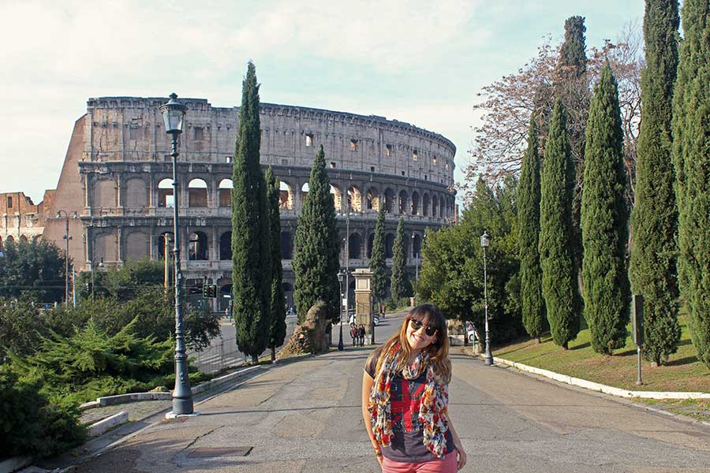

Pontos Turisticos da Europa
1. Itália: Coliseu de Roma
O principal ponto turístico da Itália é sem dúvida o Coliseu de Roma. É um dos monumentos mais famosos do mundo e atrai nada menos do que 4 milhões de turistas todos os anos. Sua construção se iniciou no ano de 72 d.C. e durante décadas, serviu de palco para gladiadores que lutavam entre si ou com animais para um público de mais de 70 mil romanos.A visita às ruínas do Coliseu é um passeio obrigatório a todos os turistas que visitam Roma e a Itália, não somente por sua grandeza, mas por sua história
2. França: Torre Eiffel em Paris

É claro que a Torre Eiffel de Paris não poderia estar fora dessa lista. Construída em 1889, ela conta com 325 metros de altura e 1.665 degraus, e você não pode deixar de visitá-la quando estiver em Paris. Vista de diversas partes da capital francesa, a Torre Eiffel é um marco de como um monumento pode tornar-se um símbolo de uma nação.Não importa a época em que você está planejando ir a Paris e a França, conhecer a Torre Eiffel é quase uma obrigação, para estar no seu álbum de lembranças de sua viagem à Europa
3. Espanha: Sagrada Família em Barcelona

Os principais pontos turísticos de Barcelona e da Espanha foram construídos pelo famoso arquiteto Antoni Gaudì. A principal obra e o ponto turístico mais famoso que ele construiu é a Sagrada Família de Barcelona, uma igreja com uma grandeza incomparável e que ainda não está acabada, pela enorme quantidade de detalhes e pelo tamanho que foi projetada.